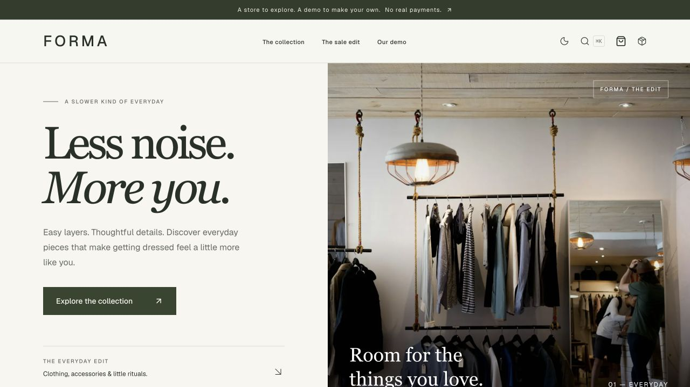
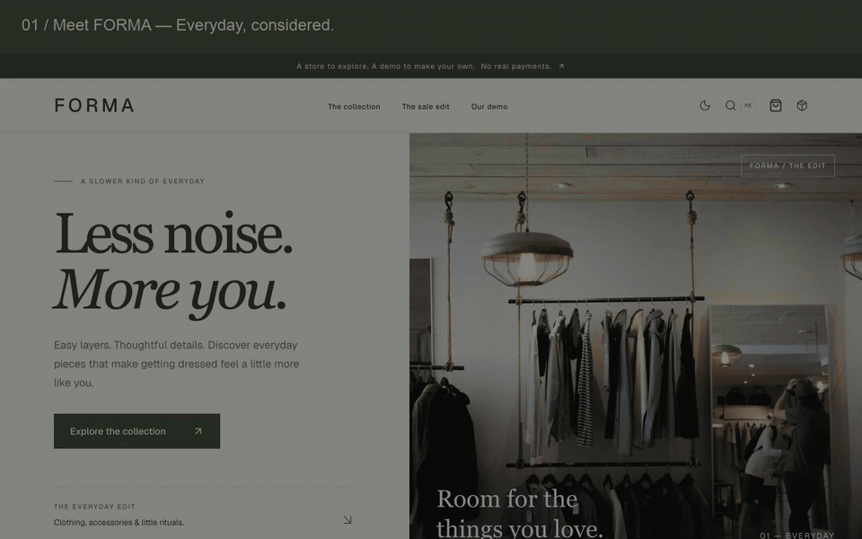
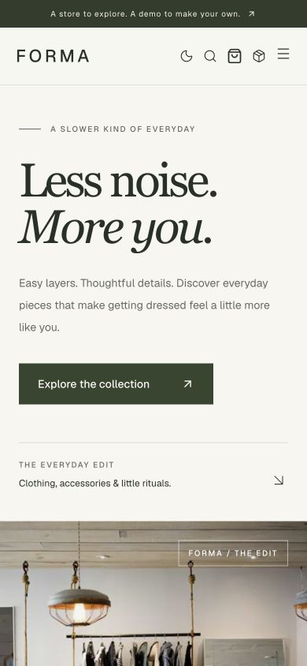
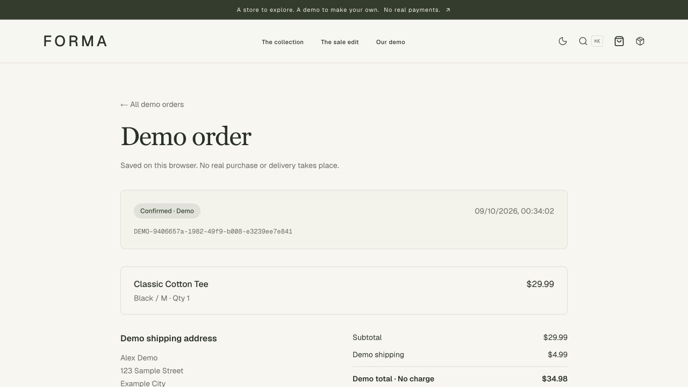

One catalog.
A shared source for 12 products keeps the storefront's shopping surfaces consistent and makes template customization easier.
v0.1.0 / Project showcase
FORMA is a fictional everyday boutique and an open-source Next.js storefront. Explore the design, the shopping flow and the decisions behind it — all in this local presentation.

From first look to saved order
A silent montage of actual captured interface screens, with written chapter captions. It is not a real-time recording.
Download the video
Across the journey


The project
The goal is to make a frontend commerce demo feel complete and easy to reuse. A single typed catalog connects discovery, search, product details and checkout. The same data drives price and quantity checks.
The focus is a coherent journey, not a production transaction service. Cart and orders stay in the visitor's browser; authentication, shared inventory, payments and live shipping would require a server-backed system.
FORMA 的目标是做出完整、易于复用的电商前端作品。浏览、搜索、商品详情与结算共用一份商品目录，让价格、规格和数量校验保持一致。
这里展示的是前端模拟购物流程。购物车与订单保存在当前浏览器中；真实登录、共享库存、支付和物流需要另外实现服务端系统。
A shared source for 12 products keeps the storefront's shopping surfaces consistent and makes template customization easier.
Saved carts are checked on restore. Orders are persisted before the cart is cleared, so a storage failure does not erase the visitor's selections.
No database or API keys are needed for the demo. Browser storage is local and editable, so it is never treated as a trusted transaction system.
Read the full bilingual case study for source links, tradeoffs, test coverage and CV notes.
Make it your own
This presentation uses bundled media and system fonts, so it can be viewed without a server. To interact with the actual store, download the source from the v0.1.0 release and follow its local setup instructions.
Requires Node.js 22.22+ for the app. Internet access is needed for dependencies, Google fonts at build time and product photographs. The source includes automated checks and MIT licensing.
解压后直接打开本页面即可看截图和视频，无需部署，也无需安装 Node.js。若想实际操作购物车和订单，请下载 Release 中的源代码并按本地运行说明启动。
离线展示包包含的是演示素材，不是可独立运行的商城应用。外部源码和文档链接需要联网。